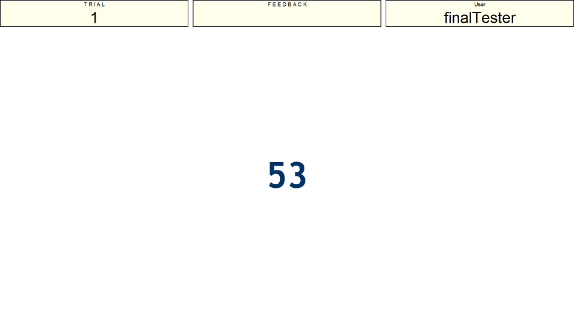
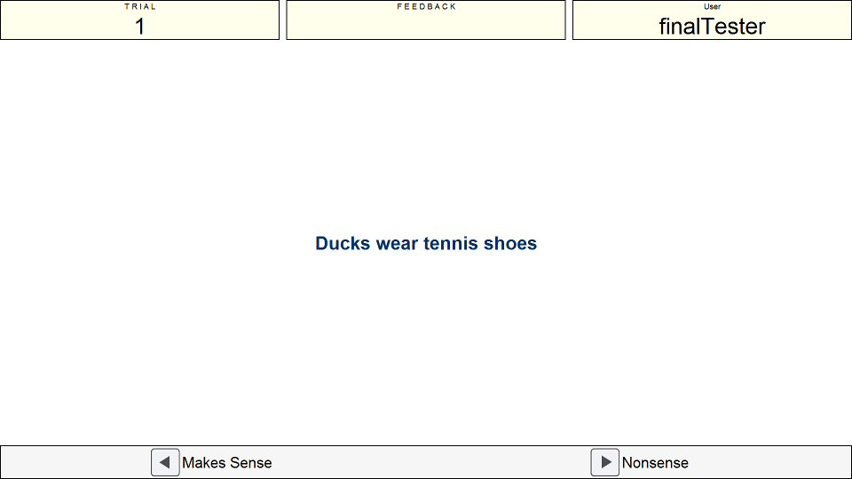

Instructions
Presentation Phase
This is the reading span task. As with some of the other tasks the information you are given to remember in serial order are digits (between 1-99). The first image shows an example of a number being presented. After each number you will be shown a sentence and you must read this sentence and decide if it makes sense or not. Indicate with the left and right arrow keys whether or not you think the sentence makes sense.


The second image shows an example sentence "Ducks wear tennis shoes". Clearly the answer here would be the right key as it is nonsense, ducks (in general) do not wear shoes!
Recall
The recall phase will simply ask you for each number that you were shown in that trial (between 2 and 6 numbers). Type in the number you want to input and press the enter key. Remember that it is important you pay attention to the sentences and get them right as recalling the numbers without correct sentence judgements scores little.